Satılık · Öne Çıkan İlanlar
Yoluç Caddesi'nde sıfır dubleks daireler.
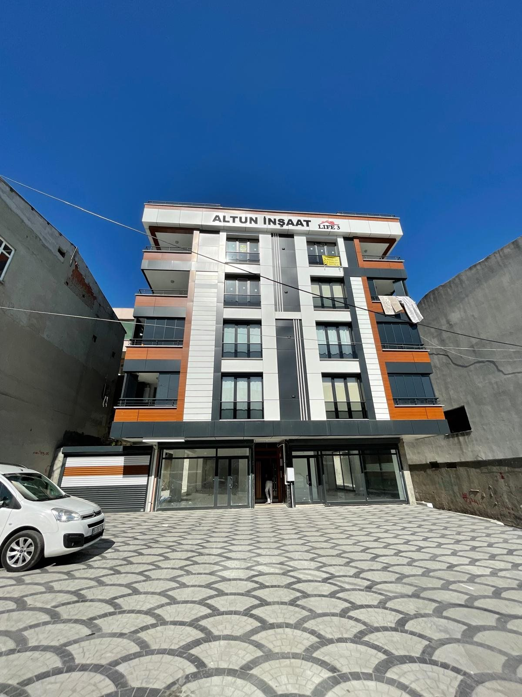

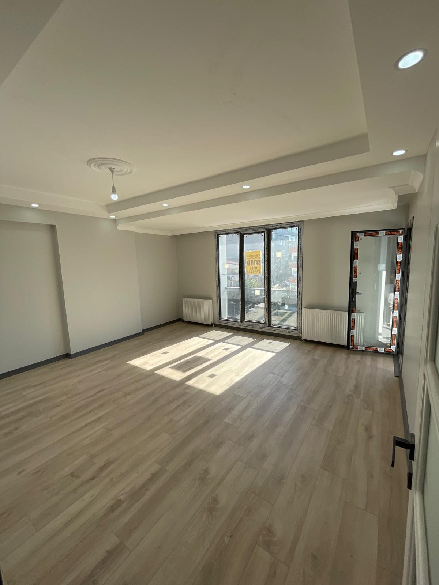
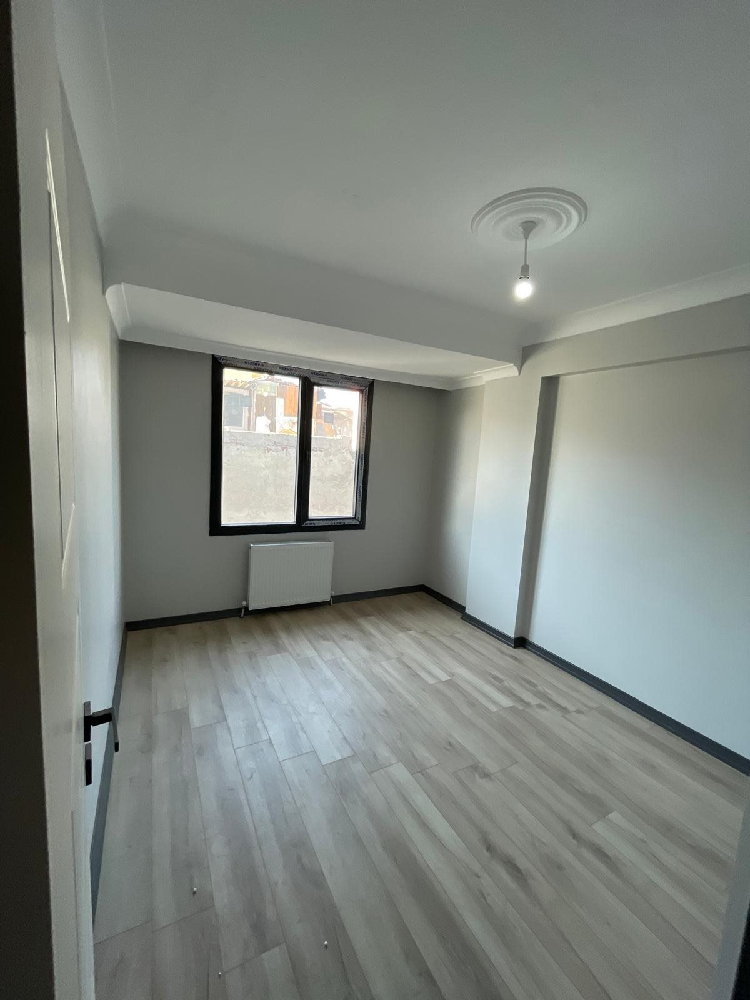
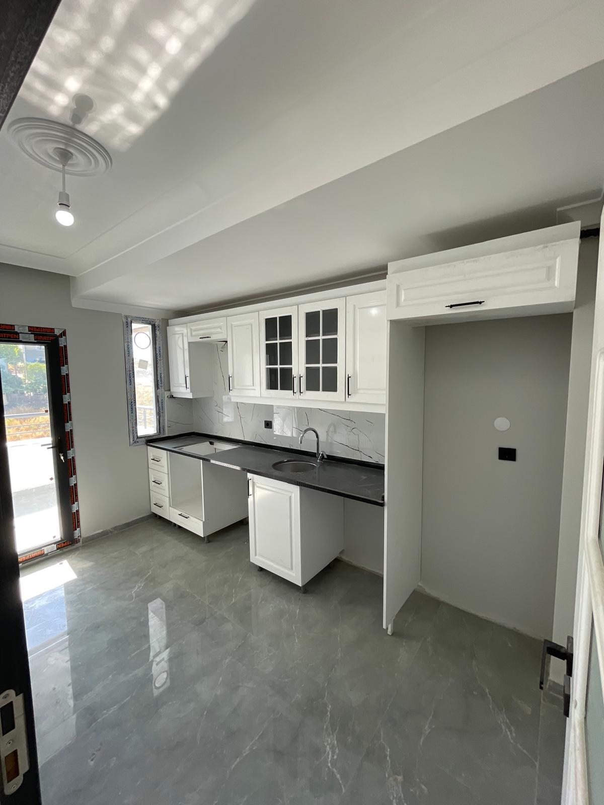
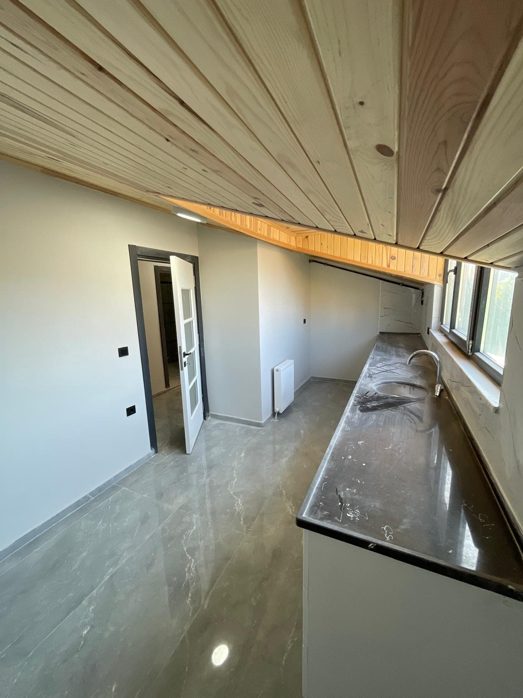
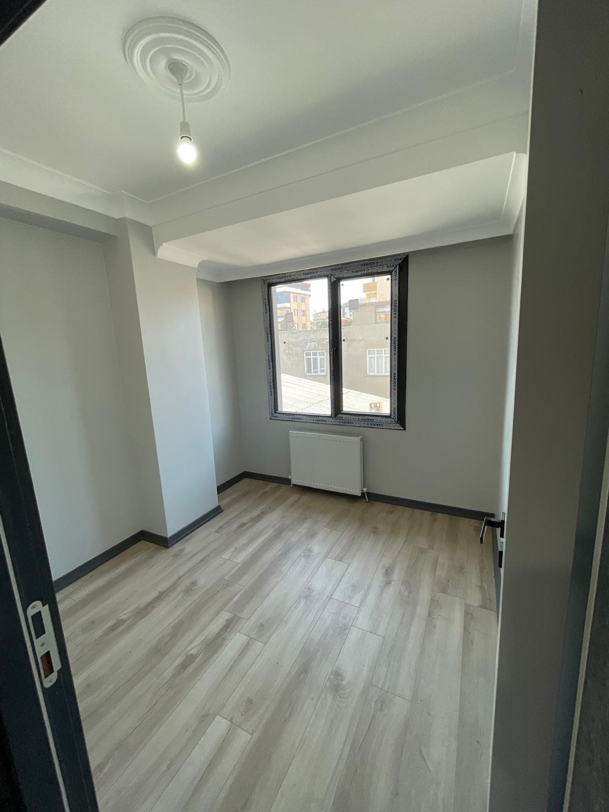
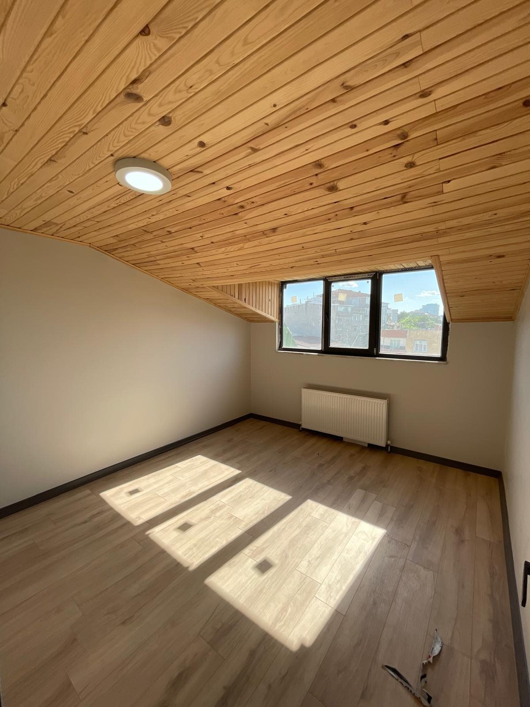
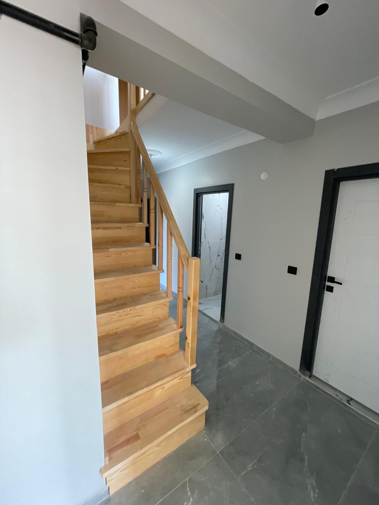
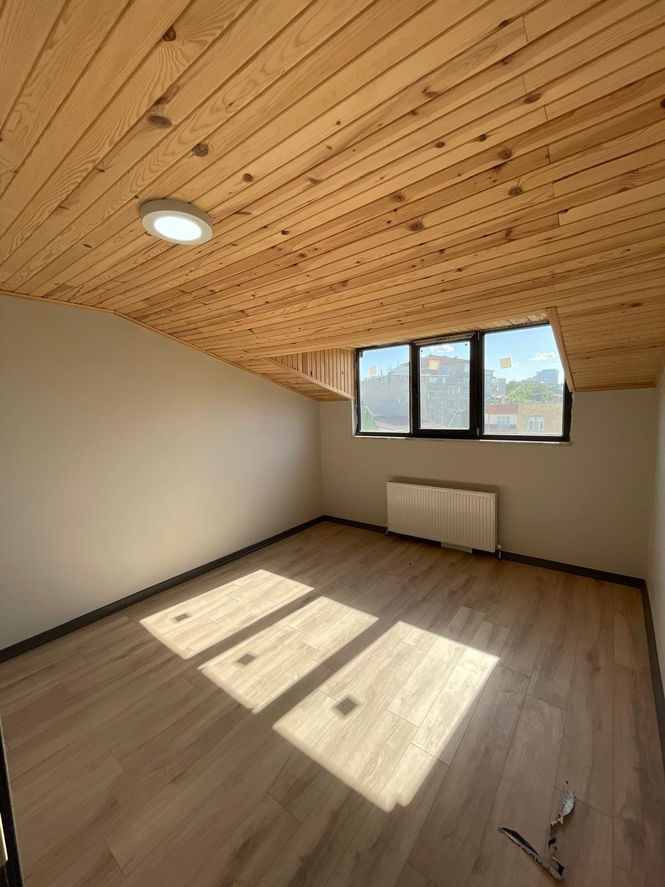
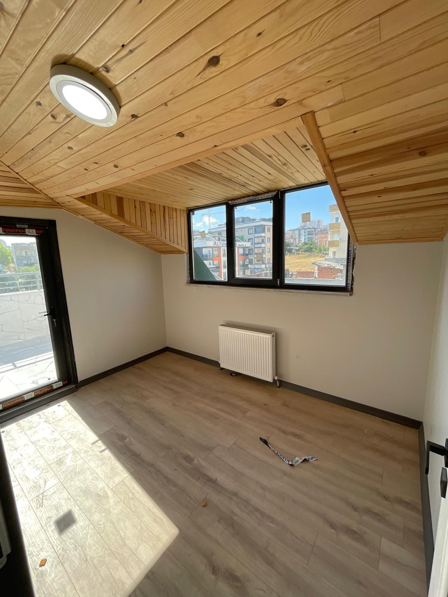
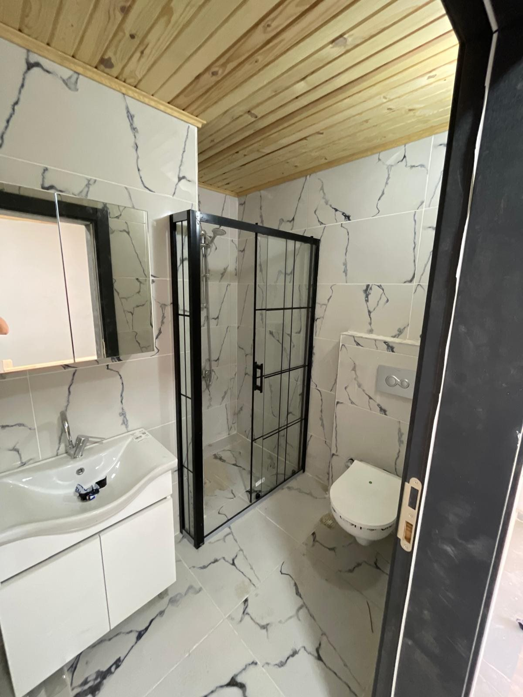
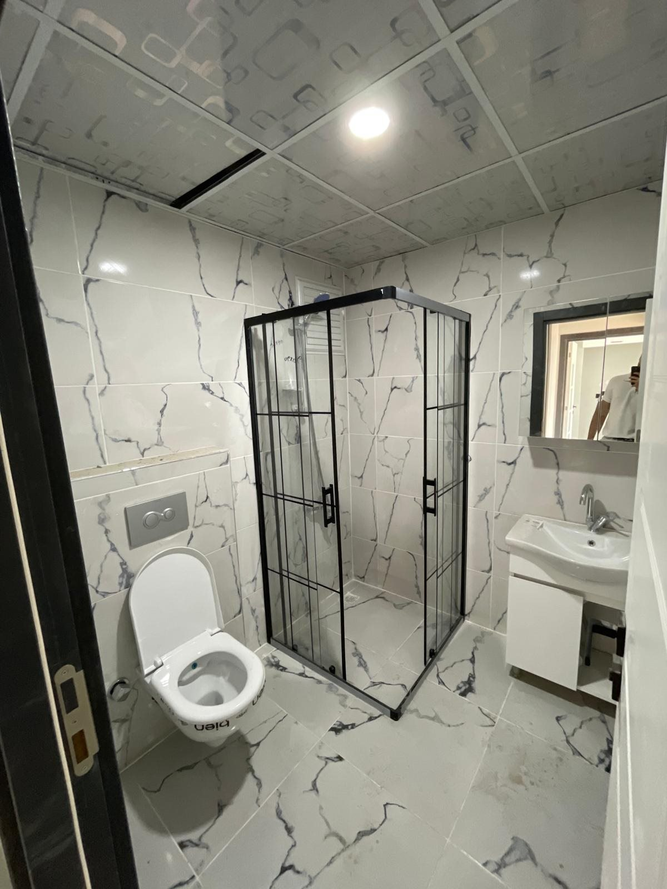
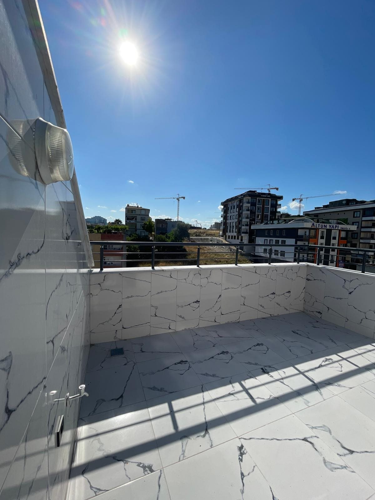

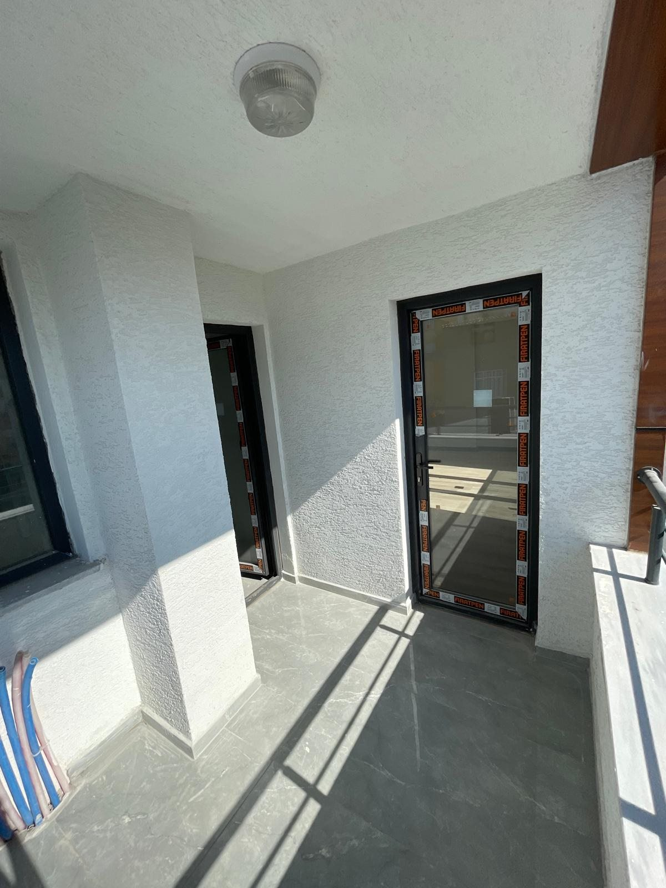
Sıfır · Dubleks · Ön Cephe
Yoluç Caddesi Dubleks Daire — Ön Cephe
Tahtakale Mah. Yoluç Cad. · Avcılar / İstanbul
7.250.000 TL
- Dubleks daire (sıfır)
- Alt kat 2+1 · Üst kat 1+1
- 160 m² kullanım alanı
- 5 katlı bina
- Asansörlü
- Kapalı garaj
- Sığınak
- Depo
Avcılar Tahtakale'de, Yoluç Caddesi üzerinde yükselen 5 katlı asansörlü binada; hiç kullanılmamış, sıfır dubleks daire. Alt katı ferah 2+1, üst katı 1+1 olmak üzere toplam 160 m². Geniş salonu, doğal ahşap tavan detayları, mermer banyoları ve modern mutfağıyla ilk günün tazeliğinde. Kapalı garaj, sığınak ve depo dahil. Merkezî konumu ve yatırıma değer bölgesiyle hem oturmak hem yatırım için ideal.
Hüseyin Kibaroğlu · 0532 522 40 05